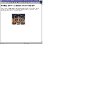
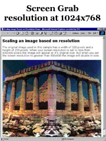
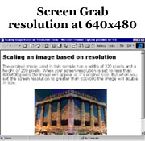

|
| ||
|
| ||
Nadja Vol Ochs
Design Consultant
Microsoft Corporation
March 23, 1998
The following article was originally published in the Site Builder Magazine (now known as MSDN Online Voices) "Site Lights" column.
More and more people are interested in having content scale to the size of the viewer's browser window or to the browser resolution. Has the time come to say good bye to the sites that request you to open your browser window to a certain size?
With the help of developer Hans Hugli, we have created two simple, step-by-step tutorials on how to scale content -- and a couple samples to help you get started. The samples in this article work in Internet Explorer 4.0  only.
only.

Scaling content to meet the browser window size is a possibility for Internet Explorer 4.0-targeted content. The following is a set of steps to follow in order to scale content on your page.
<img id=img1 src=greece.jpg>
<img id=img1 style="position:absolute; left:0; top:0; z-index:-1;" src=greece.jpg>
<script>
var cr = "\n";
var msg = "";
function change() {
if (document.body.clientWidth > 1
&& document.body.clientHeight > 1) {
img1.style.width=document.body.clientHeight*.58
+ "px"
}
}
window.onresize=change
window.onload=change
</script>
Be sure that each element is included individually in the change function.
With a little script, it is easy to scale text based on the browser size. In a manner similar to the image scaling above, these two samples illustrate different ways to scale text based on the browser size (in scripting, browser size is referred to as "clientHeight").
The first sample sets the original size of the type when the window first opens:
if (x==0)
{
text1.style.fontSize="64px"
x=x+1
}
The minute the browser is scaled, the size of the type is adjusted:
else
{
if (document.body.clientWidth > 1
&& document.body.clientHeight > 1) {
text1.style.fontSize=document.body.
clientHeight*.1 + "px"
text1.style.left=document.body.
clientHeight*.1 + 10
}
The second sample simply adjusts the size of the type according to the browser window. You can play with the numbers in the function to increase or decrease the initial size of the font. For example, if you increase the *.2 to *.4, the font will increase in pixel size. (You can view the source code to obtain all the necessary script.)
if (document.body.clientWidth > 1
&& document.body.clientHeight > 1) {
text1.style.fontSize=document.body.
clientHeight*.2 + "px"
text1.style.left=document.body.
clientHeight*.2 + 10
}
 |
 |
I recently received the following question from a Web designer here at Microsoft who is designing a new site. I thought it advantageous to explain how you can implement this feature on your site.
Nadja,
I was wondering if you have some suggestions on how to implement a home page that works and looks good in both 640 x 480 and 800 x 600?
More specifically:
The image on the home page is now one big image, that looks good at 800x 600 but if you were to view the screen at 640 x 480 the image gets cropped, scroll bars get added. Is there a way for an image to dynamically resize depending on what resolution?
-Julie
You can dynamically resize images and text depending on what resolution your browser is running. Follow these three easy steps for scaling an image based on the client machine's resolution setting.
<HTML> <HEAD> <TITLE>Scaling Image Based on Resolution Demo</TITLE>
<script>
function msieversion()
{
var ua = window.navigator.userAgent
var msie = ua.indexOf ( "MSIE " )
if ( msie > 0 )
// is Microsoft Internet Explorer;
// return version number
return parseInt ( ua.substring
( msie+5, ua.indexOf ( ".", msie ) ) )
else
return 0; // is other browser
}
and a function that resizes the image depending on the resolution of the client. Notice that for browser resolutions set to less than 800, I have specified the width and height of the image. If the client size is anything else, I can set the image width and height to twice as big.
function go() {
if (msieversion() >=4) {
//if (document.body.clientWidth<780) {
if (screen.width<800) {
image.width=320
image.height=259
}
else {
image.width=640
image.height=518
}
}
}
window.onresize=go;
</script>
</HEAD>
<BODY onload="go()" bgcolor=white > <CENTER> <img id=image src="greece.jpg" width=320 height=259> </center> </BODY> </HTML>
View a sample of scaling an image to the browser resolution.
Nadja Vol Ochs is the design consultant in Microsoft's Developer Relations Group.
On a PC: Press the key combination: Alt-Print Scrn to take a screen shot of the open window on the top.
The screen shot is stored in the Windows clipboard.
Then go into Photoshop or your favorite graphics program that supports bitmaps, open a new document and paste it in.
On a Mac: Press the key combination: Command(apple)-Shift-3.
Listen for the cute sound effect of a camera shutter.
This will save the screen capture as a PICT file on the top level of your
Startup drive, named Picture 1.
For the cleanest screen shots, size your browser window to the dimensions desired for your final image. The results are cleaner than trying to resize the resulting GIF image.
Making screen shots
For technical how-to questions, check in with the Web Men Talking, MSDN Online's answer pair.
Did you find this material useful? Gripes? Compliments? Suggestions for other articles? Write us!
© 1999 Microsoft Corporation. All rights reserved. Terms of use.